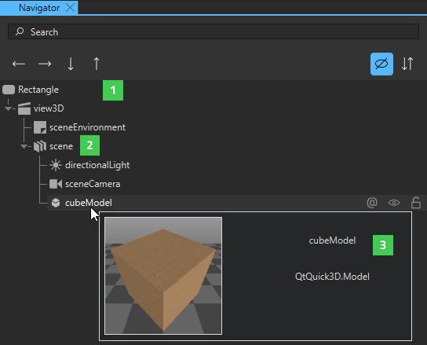
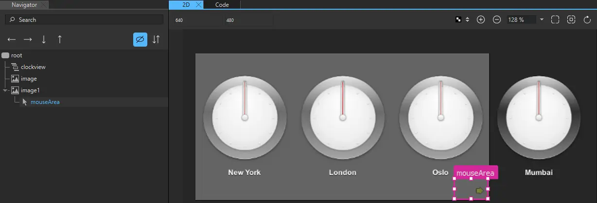
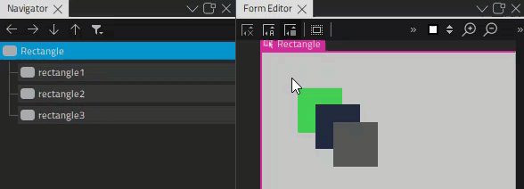
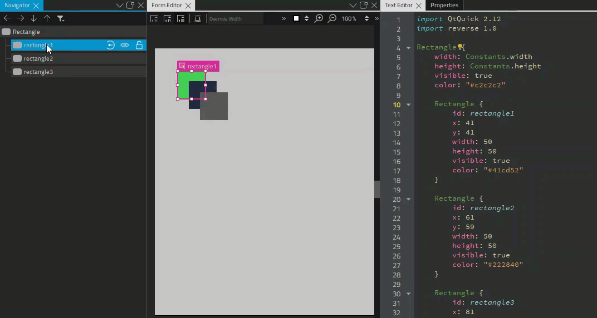
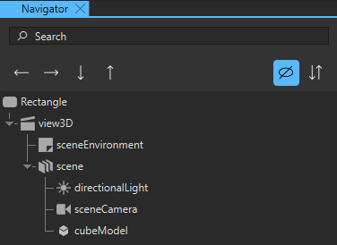
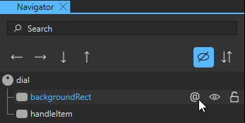
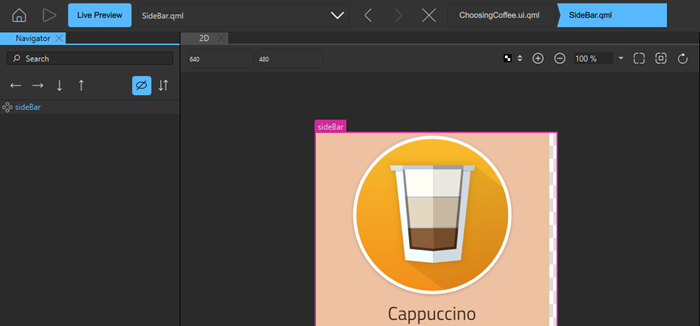

Navigator
The Navigator view displays the components in the current component file and their relationships. Components (1) are listed in a tree structure, below their parent (2). You can preview components by hovering the mouse over them (3).

You can select components in the Navigator view to edit their properties in the Properties view. Components can access the properties of their parent component. To select components in the 2D view, right-click a component, and select another component in the Selection submenu.
Typically, child components are located within the parent component in the 2D view. However, they do not necessarily have to fit inside the parent component. For example, you might want to make a mouse area larger than the rectangle or image beneath it.

When you copy a component, all its child components are also copied. When you remove a component, the child components are also removed.
Select context menu commands to apply commands to components. The availability of the commands depends on the component type. For example, you can change the source of an Image component by selecting Change Source URL in the context menu.
Summary of Navigator Buttons
The following table lists the Navigator buttons:
| Icon | Tooltip | Read More |
|---|---|---|
| Moves the component one level up in the component tree, so that it becomes the last sibling of its current parent. | Arranging Components | |
| Moves the component one level down in the component tree, so that it becomes the child of its last sibling. | Arranging Components | |
| Moves the component down within its parent. | Arranging Components | |
| Moves the component up within its parent. | Arranging Components | |
| Shows and hides invisible components in Navigator. | Showing and Hiding Components | |
 | Adds a property alias that you can use from outside of the component. | Adding Property Aliases |
| Shows and hides components in the 2D view. | Showing and Hiding Components | |
| Locks components in all views. | Locking Components |
Showing and Hiding Components
To show and hide components in the 2D view when focusing on specific parts of the application, click in Navigator.
To change the visibility of a component in the application code, select the Visibility check box in the Properties view or select Visibility in the context menu.
You can also set the Opacity field to 0 in Properties to hide components in the UI that you want to apply animation to.
As all properties, visibility and opacity are inherited from the parent component. To hide or show child components, edit the properties of the parent component.
To hide invisible components in Navigator, click (Filter Tree) and select Show Only Visible Components.
Locking Components
When designing complex applications, it is easy to accidentally modify the properties of a component in one of the Qt Design Studio views in ways that lead to surprising results. For example, the 2D view can become crowded and other components can get in the way when you are trying to select or transform a particular component, so that you end up transforming more components than you wanted to.
To lock components that you are not currently editing and their children, click in Navigator. Locked components cannot be handled in any Qt Design Studio views. You can unlock the components when you want to edit them again.

You cannot select locked components in the 2D view or the 3D view nor access their properties in Properties.
If you attempt to remove a state that changes the properties of a locked component, you are prompted to confirm the removal.
If you have added easing curves to keyframe animations, you can lock and unlock them in the Curves view. If you lock the components that contain the easing curves, the lock status is synchronized between Navigator and Curves.
Arranging Components
You can view the order of components in a component file in Navigator and the Code view. The order of components in the file also determines the order in which they are drawn in the 2D view. By default, components that are located at the top of the file are listed at the bottom of the Navigator tree and behind overlapping components in the 2D view. To list the components in the order in which they appear in the file, as some other tools do, click (Filter Tree), and select Reverse Component Order.
To move a component to the top or bottom of the tree within its parent, right-click it in the Navigator or 2D view and select Arrange > Bring to Front or Send to Back. To move a component up or down, select Bring Forward or Send Backward.
To reverse the order of the selected components in the Navigator and Code views, select Arrange > Reverse.

You can also drag-and-drop the component to another position in the tree or use the arrow buttons to move the component in the tree. You can use the left and right arrow buttons to change the parent of the component.

When you drag-and-drop instances of components to the 2D view, the new component is added as a child of the component beneath it. When you move the components, it is not possible to determine whether you want to adjust their position or attach them to a new parent component. Therefore, the parent component is not automatically changed. To change the parent of the component, press down the Shift key before you drag-and-drop the component into a new position. The topmost component under the cursor becomes the new parent of the component.
Adding Property Aliases
A property alias is a property that you can use from outside the component. When you view the code in the Code view, a property alias declaration looks like an ordinary property definition, except that it requires the alias keyword instead of a property type, and the right-hand-side of the property declaration must be a valid alias reference:
property alias <name>: <alias reference>
For example, the following alias refers to a button component instance within an item component instance:
property alias button: item.button
A valid alias reference:
- Can only point to a component instance or property within the component where the property alias is declared.
- Cannot contain arbitrary JavaScript expressions.
- Cannot point to components of another type than the component where the property alias is declared.
- Must be defined when the alias is first declared.
- Cannot point to attached properties.
- Cannot point to properties of nested component instances below the third level.
You can use the (Export) button in Navigator to export a component as a property alias with a valid alias reference.

You can then use the property alias in other components to create connections to this component.
Moving Within Components
The files that specify components (ui.qml, .qml) can contain instances of other components specified in separate files. You can open the file that specifies a component in different ways from different views:
- In the 2D or Navigator view, right-click an instance of a component and then select Edit Component in the context menu or press F2.
- In Properties, select Edit Base Component.
The component hierarchy is displayed as a bread crumb path, where you can click the component names to open the respective files. This enables you to easily navigate back to the top level when you are done editing the component.

Context Menu
The following table summarizes the Navigator and 2D views context menu items and provides links to more information about them.
| To Learn About | Go To |
|---|---|
| Arrange | Arranging Components |
| Edit | Showing and Hiding Components |
| Anchors | Setting Anchors and Margins |
| Group | Organizing Components |
| Position | Using Positioners |
| Layout | Using Layouts |
| Stacked Container | Lists and Other Data Models |
| Timeline | Creating a Timeline |
| Event List | Simulating Events |
| Edit Color | Editing Properties Inline |
| Edit Annotation | Annotating Designs |
| Merge File with Template | Merging Files with Templates |
| Move Component Instances into Separate Files | Turning Component Instances into Custom Components |
| Add New Signal Handler | Adding Signal Handlers |
| Go to Implementation | Using UI Files |
| Edit Component | Moving Within Components |